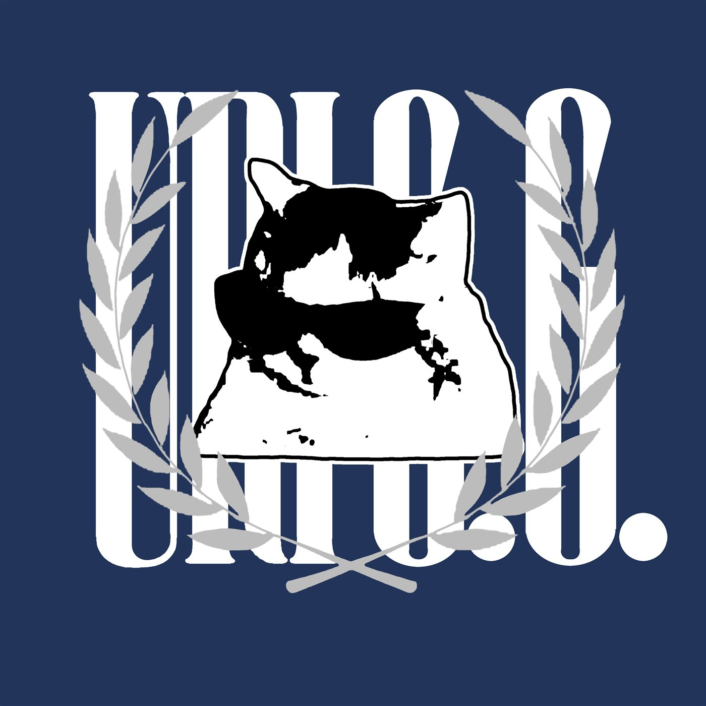
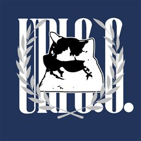

URIGG
URIGG — Security, logged.
정보보안을 공부하는 학생 URIGG입니다. 리눅스와 네트워크를 처음부터 기록하고, 필요한 도구는 직접 만듭니다.
공부 기록 보기


안녕하세요, URIGG입니다.
정보보안을 공부하고 있습니다. 보안은 결국 시스템을 깊이 이해하는 일이라고 생각해서, 가장 아래층인 리눅스와 네트워크부터 하나씩 쌓고 있습니다. Learning security from the ground up.
공부한 내용은 티스토리 블로그 security.log에 연재합니다. 「리눅스 제로부터」는 로그 읽기까지, 「네트워크 첫걸음」은 서브넷 마스크와 DHCP까지 왔습니다.
2026년 10월에는 첫 자격증 목표인 리눅스마스터 2급 1차 시험을 치렀습니다. 다음 차례는 웹 해킹과 암호학입니다.
공부하다 필요한 도구가 생기면 직접 만듭니다. C++로 텍스트 RPG와 로그라이크를 만들었고, 요즘은 Claude와 함께 만든 캘린더 앱으로 하루를 관리합니다.
URIGGSecurity student
Filed on GitHub
블로그 원고와 실습 기록, 자격증 오답 노트를 모아 두는 저장소 URIGG-security.log입니다. 폴더 구성은 README 목차에서 바로 읽어 옵니다.
 코워크 캘린더
코워크 캘린더
바탕화면 위에 늘 떠 있는 달력 위젯입니다. 날마다 일정이 이모지로 표시되고, 아래에 오늘 일정과 다가오는 일정이 보입니다.
Tauri · React · Supabase · Cloudflare Workers